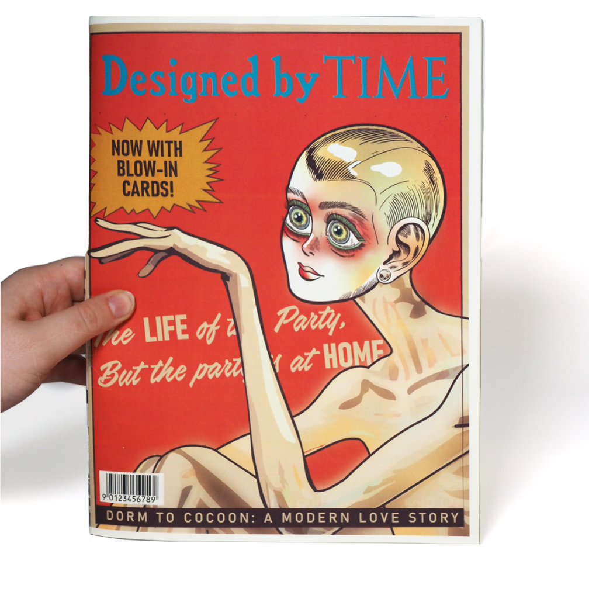
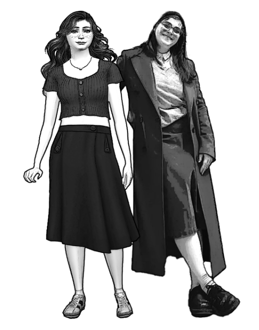
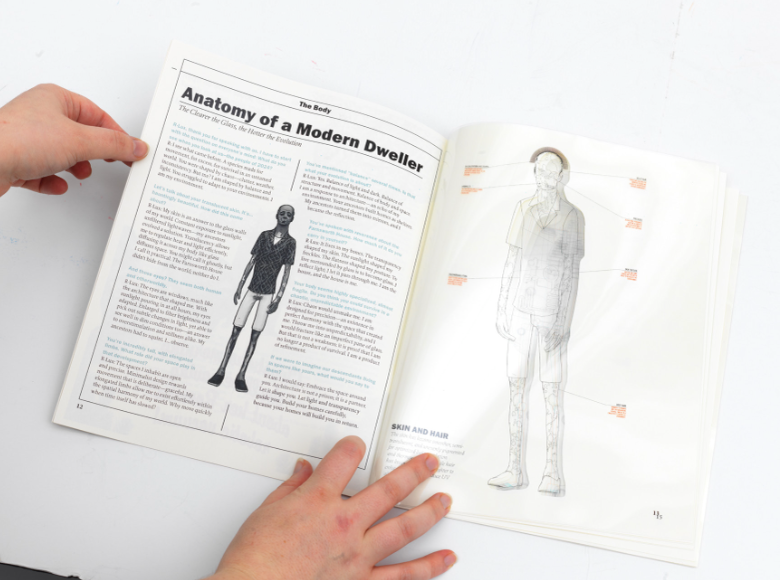
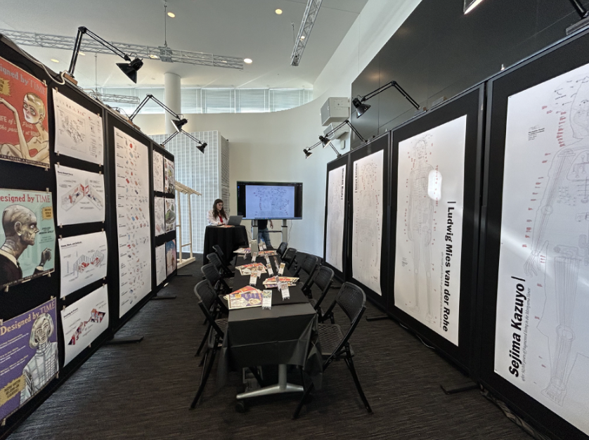
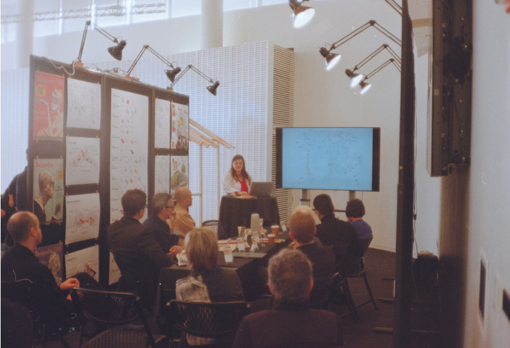
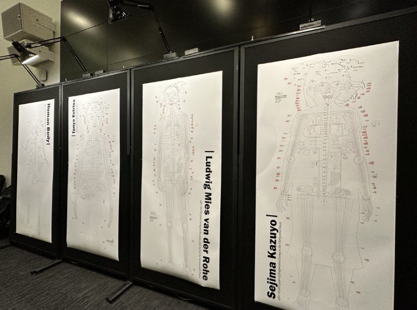
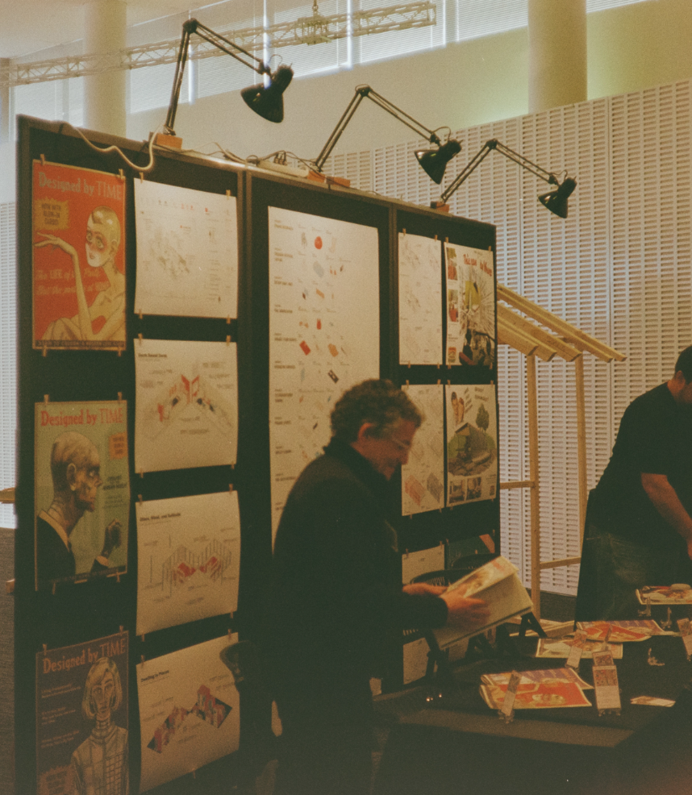
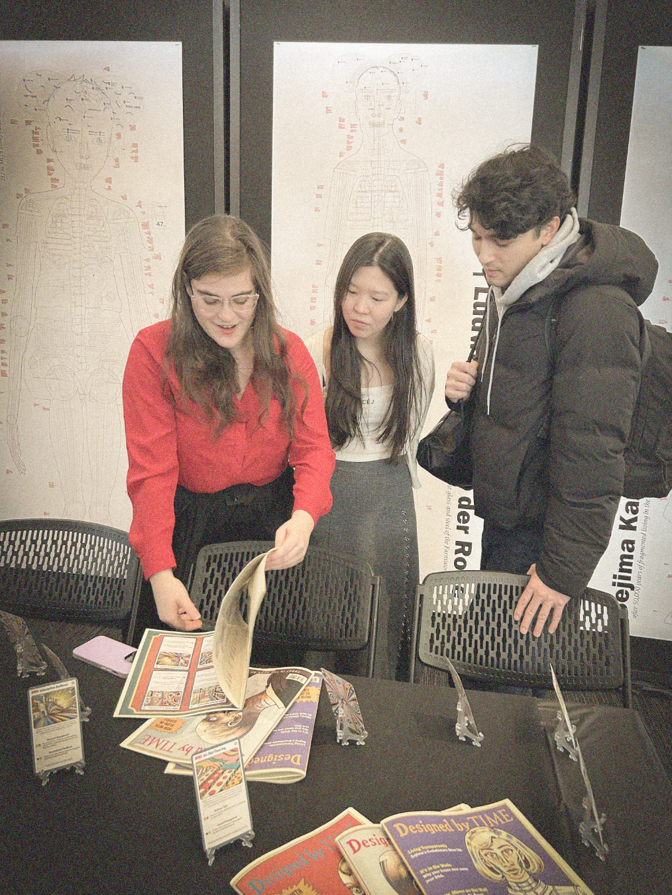

ARCHITECTURE AS PROSTHESIS
Master of Architecture Thesis
Humans have always adapted to the environments they build. From early shelters to today’s sealed, mechanically conditioned interiors, architecture increasingly acts like a prosthesis — a third skin around the body. This thesis asks what happens when that relationship plays out over generations.
CONTEXT
MArch + MS EECS Thesis
SOFTWARE + TOOLS
Python, C#, Sims 4, Unity, Illustrator, Photoshop, Rhino
SUPERVISORS
Skylar Tibbits, Stefanie Mueller

IN ABSTRACT
Our lives have become exceedingly comfortable. In fact, we are cheerfully inside of comfortable bubbles,
while
the
world around us burns. Today, 90% of our time is spent indoors, transforming interior spaces from mere
shelters
into comfort cocoons.
Daniel Barber’s “After Comfort” questions the necessity of such intensive comfort in buildings, citing their
environmental impacts. However, the conversation must go further. Designers must critically examine the
comforts
we create—not only for their environmental consequences but also for their effects on the evolution of the
human
species.
This thesis posits that architects must consciously consider the long-term impacts of their designs on future
generations. It is imperative for designers to intentionally decide what to advocate for as we build for the
deep
future—not only addressing today’s environmental effects but anticipating those of tomorrow. How can we
predict
the repercussions of our current lifestyles on future generations? How might we design with these
possibilities
in
mind?
To explore these questions, this thesis employs simulation as a design tool, to observe humans’ social,
physical,
and psychological responses to architectural conditions over generations. The research concludes with
strategies
derived from simulations to mitigate undesirable outcomes and proposes revised existing building designs to
implement them.
By merging design, gaming, and narrative fabulation, this research explores how the spaces we inhabit today
could
transform humanity’s future, urging architects to approach design with greater intention and foresight, and
how
computation can play a role in the simulation and prediction of such design.
Background
FROM SHELTER TO PROSTHESIS
Architecture began as protection from climate, but increasingly became a controlled interior climate of its own. As heating, cooling, lighting and digital life smooth away environmental variation, the built environment becomes an active pressure on how bodies behave and adapt.


Mapping Human Evolution
Before exploring the possibilities of human evolution in the future, it is important to explore and document how the human body has shifted and changed until this point, specifically, changes due to inventions, innovations, and environmental changes that are precedents to the changes bodies experience today in environmentally controlled building designs. This timeline maps some of the correlations between invention, space, architecture, and the bodies that use and occupy these prosthetics.


Case 01
THE DORM
The first subject of this experiement is Tanya Estrina: aka me. A generic MIT efficiency dorm room is the architectural condition in which Tanya lives becomes the site of experimentation. Tight space, weak daylight, screens, flat floors and steady HVAC reward sitting still and staying inside. Over generations, the body becomes optimized for a sedentary, technology-heavy interior life.
Revision: Variable floor heights, unflat flooring, stronger daylight and longer sight lines, plus more exchange between inside and outside, put movement and environmental variation back into everyday life.

The first subject of this experiement is Tanya Estrina: aka me. A generic MIT efficiency dorm room is the architectural condition in which Tanya lives becomes the site of experimentation. Tight space, weak daylight, screens, flat floors and steady HVAC reward sitting still and staying inside. Over generations, the body becomes optimized for a sedentary, technology-heavy interior life.


DESIGNED BY TIME ISSUE 01: Sidney Pacific Evolvee
Flip through the magazaine about her evolution:


Case 02
FARNSWORTH HOUSE
Mies van der Rohe’s glass pavilion produces the opposite pressure: exposure. Hard surfaces, minimal furniture, open planning and constant visibility tune the body to a highly controlled modernist world while reducing privacy and tolerance for softer, less predictable terrain.
Revision: Soft partitions, dynamic layouts, variable levels, seasonal zones and passive ventilation keep the openness but make the house less physically and socially prescriptive.


DESIGNED BY TIME ISSUE 02: Fransworth Evolvee
Flip through the magazaine about his evolution:


Case 03
MORIYAMA HOUSE
Ryue Nishizawa’s fragmented house turns daily life into a sequence of thresholds. Moving between small rooms and outdoor space rewards balance, flexibility, environmental awareness and sensitivity to others.
Revision: Movable elements, uneven floors, seasonal spaces, augmented rather than total HVAC, and acoustic zoning preserve the house’s productive instability while giving occupants more ways to adapt.

DESIGNED BY TIME ISSUE 02: Moriyama Evolvee
Flip through the magazaine about his evolution:


18 STRATEGIES
The three cases become a toolkit rather than a single ideal building. The strategies challenge physical habits, increase sensory engagement, blur the line between interior and climate, and loosen rigid program. The goal is simple: design for variation, not frictionless comfort.

Drag the strategy cards anywhere across the thesis page. Click or tap a card to bring it forward. Hold Shift while dragging to rotate it.


Full thesis
ARCHITECTURE AS PROSTHESIS
Flip through the complete thesis to see the research, simulations, case studies and strategy catalogue together.
.jpg)





